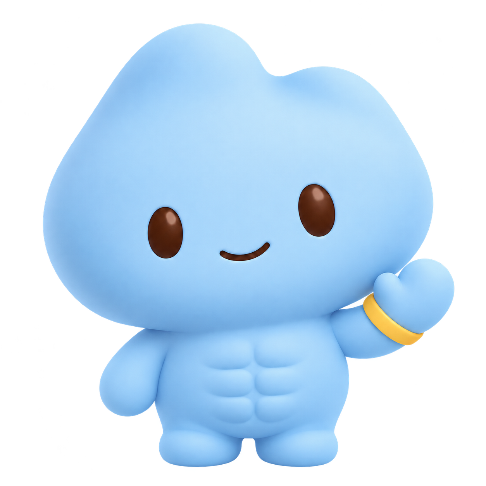

9:41▮▮▮ ▰

晚上好，
今天感觉怎么样？
记录今天，也给自己一点时间。
我有点累看看今天怎么练
今日训练
上肢力量
哑铃卧推、坐姿划船等 4 个动作
今日记录
午餐 · 牛肉面12:40
体重 68.5 kg08:15
＋ 记录，或和 Milo 说说…
Milo记录课程表洞察设置
下载与管理 · 图文记录 · 网页搜索与来源

记录今天，也给自己一点时间。
哑铃卧推、坐姿划船等 4 个动作
记录今天，也给自己一点时间。
哑铃卧推、坐姿划船等 4 个动作
文字与照片在这台 iPhone 上处理。
网页搜索需要联网，图文能力正在验证。
Qwen3.5-2B（验证候选）
Q4_K_M 候选＋视觉组件 · Apache 2.0
正式版本显示文件版本与校验信息。
仅在你主动选择后使用。
插画与识别内容为占位；实际使用用户选择的照片。
内容及来源均为演示，不代表已完成搜索或核实教学质量。
搜索词会发送给搜索网站，不附带你的聊天和健康记录。
浏览器画面是本地占位，未指定搜索服务，也不会访问外网。